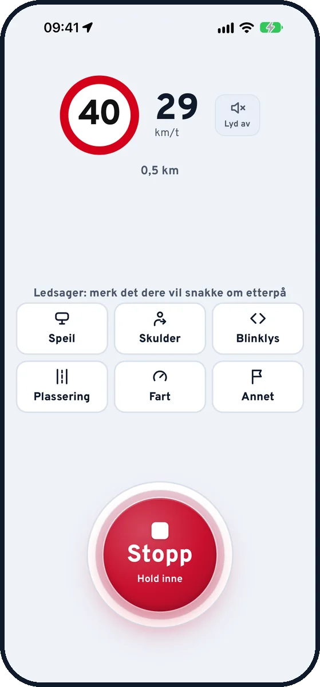

For trafikkskoler
Elevene kommer forberedt til timen.
Mesteparten av øvelseskjøringen skjer med ledsager, uten at dere ser den. Kjørerapport gjør den synlig, og gir elevene teorien med forklaring mellom timene.
- Pris etter avtale
- Ingen konto
- Ingen elevnavn hos oss

Det skolen får
Øvelseskjøring dere kan se.
Trafikklærerversjonen
Hver lærer får sin egen lærerkode. Elevene sender turer og spørsmål som en melding fra appen, og læreren ser hvor det bremses brått, hvor svingene går for fort og hvor farten er over grensen, og svarer med lekser til neste tur.
Opplæringsplanen med bevis
Appen følger hovedtrekkene i læreplanen for klasse B og viser hva som er øvd: tid i by, på landevei og i mørke, rundkjøringer, feltskifter og vikepliktkryss.
Konkrete øvingsmål
Ut fra de siste turene foreslår appen hva neste tur bør handle om, for eksempel «myk bremsing» eller «mørkekjøring». Etter turen ser eleven om målet ble nådd.
Teorien mellom timene
Alle 420 spørsmålene med forklaring, prøver som den ekte og sikkerhetskontrollen. Eleven ser hvor klar den er før teoriprøven.
Slik får elevene tilgang
Dere deler ut tilgangene selv.
Få skolens side
En egen side for skolen, uten konto og passord, og en lærerkode til hver trafikklærer.
Gi en elev tilgang
Ett trykk gir en kode og en ferdig melding. Send den på SMS eller e-post, eller vis en QR-kode på skjermen.
Eleven er i gang
Eleven trykker på lenken og har Pluss til lappen er tatt, på inntil to telefoner. iPhone bruker appen, Android nettversjonen.
Dere ser hvem som er i gang, kan skrive elevens navn på koden (det lagres kryptert), og trykker «Fikk lappen» når eleven er ferdig. Det kan læreren også gjøre i appen. En tilgang som aldri blir tatt i bruk, kan trekkes tilbake.
Pris
Dere betaler per elev.
Etter avtale
Ta kontakt, så får dere et tilbud
- Hele Kjørerapport Pluss for eleven: teorien, sikkerhetskontrollen, kameraene og alle rapportene
- Gjelder til eleven har fått lappen
- Faktura måneden etter, bare for elever som har tatt koden i bruk
- Lærerkoder til trafikklærerne er med
Vil dere prøve med noen elever først? Ta kontakt, så finner vi en ordning.
I bilen
Ledsageren starter, eleven kjører.
- 1Telefonen festes i en holder. Appen sjekker at GPS og sensorer virker før start.
- 2Ledsageren trykker «Start kjøretur». Føreren rører ikke telefonen. Skjermen viser fart og fartsgrense.
- 3Rapporten kommer når turen stoppes. Med hendelsene på kart og tips til neste tur.
Appen er for iPhone. Elever med Android bruker nettversjonen i nettleseren, låst opp med koden fra skolen.

Rapporten
Hva rapporten viser
- Poeng for bremsing, akselerasjon, svinger og jevn fart
- Hver hendelse på kartet, med fart og gatenavn
- Fartsgrenser fra Statens vegvesen og tid over grensen
- Rundkjøringer, stoppskilt, vikeplikt og feltskifter
- Utvikling over tid, og sammenligning når samme rute kjøres igjen
- Faresteder: steder der det går galt på flere turer
- Kjørelogg med tid i by, på landevei, motorvei og i mørke
- Speil, skulderblikk og blikket på veien, med frontkameraet på iPhone
Personvern som er lett å forklare
Det finnes ingen konto, og turene sendes ikke til oss. De lagres på elevens telefon, og eleven bestemmer selv hva som deles og med hvem. Skolens side lagrer kodene og når de ble tatt i bruk. Skriver dere elevens navn på koden, krypteres det i nettleseren deres før det lagres hos oss.
Viktig å vite
Målingene i Kjørerapport er veiledende og er ikke en offisiell vurdering. Appen erstatter ikke trafikklæreren. Den er laget for å gjøre øvelseskjøringen mellom timene bedre.
Vil dere prøve?
Send en e-post, så får dere en egen testside for skolen og en tilgang til å prøve appen før dere bestemmer dere.
Jo@svendsenmedia.net